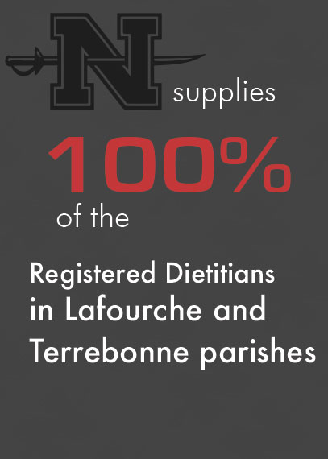
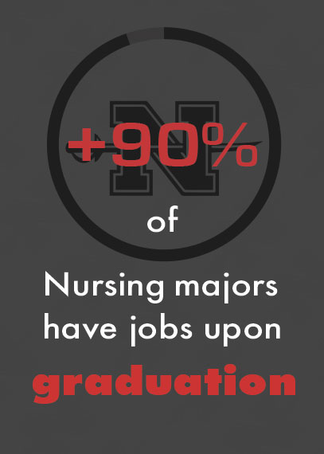
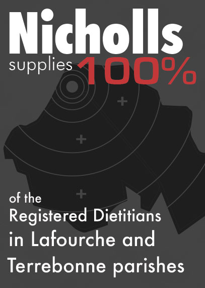
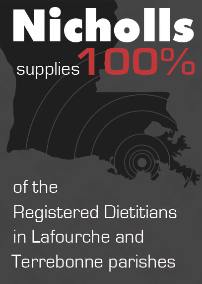

Parents
Current Students
Faculty & Staff
Alumni & Friends
Request Information
Tour Campus
Testing site
Apply Now
Programs
Admissions
Student Life
Athletics
About Nicholls
Skip to content
Adventurer Cheesecake Brownie
Adventurer Lemon
Adventurer Donut




This is the event title
This is the event information
This is the event title
This is the event information
This is the event title
This is the event information